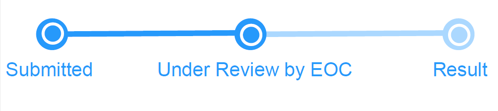

<!--
  Generated template for the RegisConfirmPage page.

  Assigned to Vineeth
-->
<ion-header>
  <ion-navbar>
    <ion-title>Reg Confirmation</ion-title>
  </ion-navbar>
</ion-header> 
<ion-content>
  <ion-list>
    <ion-item>
<h1>Thank you! <br>
  Your application has been submitted successfully.
  <br>
  Please track the status of your application below.
</h1>
</ion-item>


<ion-item>
  <!-- <ng-progress>  </ng-progress> -->
  
  <button ion-button block color="white"(click)="Dashboardrun1()">
    Next
  </button>
  </ion-item>
</ion-list>

</ion-content>
